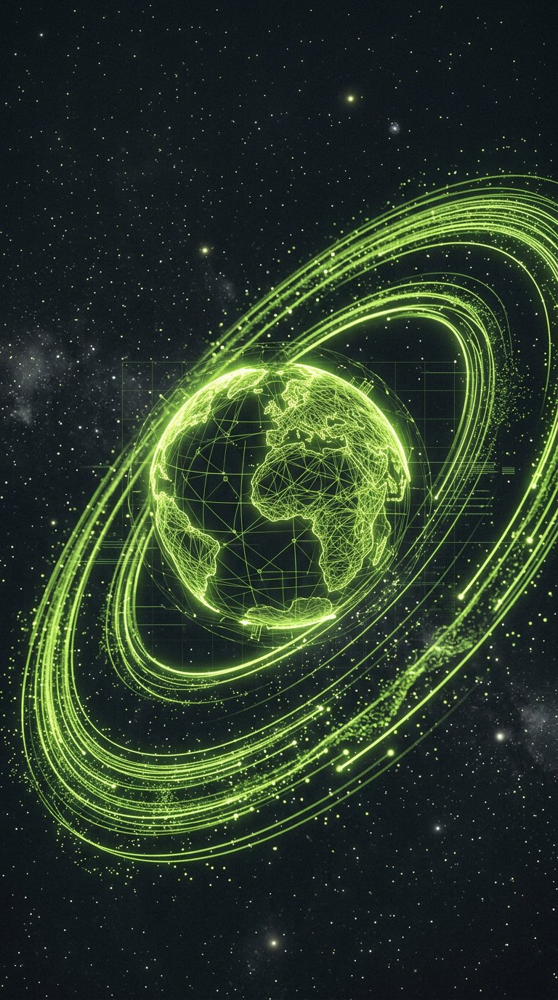

Orbit
A guided tour through a satellite constellation, running entirely in your browser.

Overview
Orbit is an interactive piece for a space-tech company’s launch campaign: a WebGL journey through their satellite constellation. Visitors steer through realtime orbits while generative audio responds to altitude. My job: make 4,000 satellites feel poetic — and keep it at 60fps on a commuter train.
The Challenge
Beauty and budget. The art direction demanded dense starfields, volumetric glow and smooth cinematics; the media plan demanded it load under 3 seconds and hold 60fps on mid-range Android.
The Process
Budget before beauty
We defined frame and memory budgets first, then designed the look to fit inside them — instancing, LOD, and one very disciplined bloom pass.
Data as choreography
Real orbital mechanics drive the motion. The camera only frames what the physics already made beautiful.
Sound from altitude
A generative score maps altitude bands to musical modes, so no two journeys sound alike — all synthesized, zero audio files.
The Outcome
The piece earned an Awwwards honorable mention, average engagement of 4m 12s, and a measurable lift in demo requests during the campaign window.
Next ProjectEngineering and art direction agreeing on a budget? That is the real moonshot.
Creative director, launch campaign